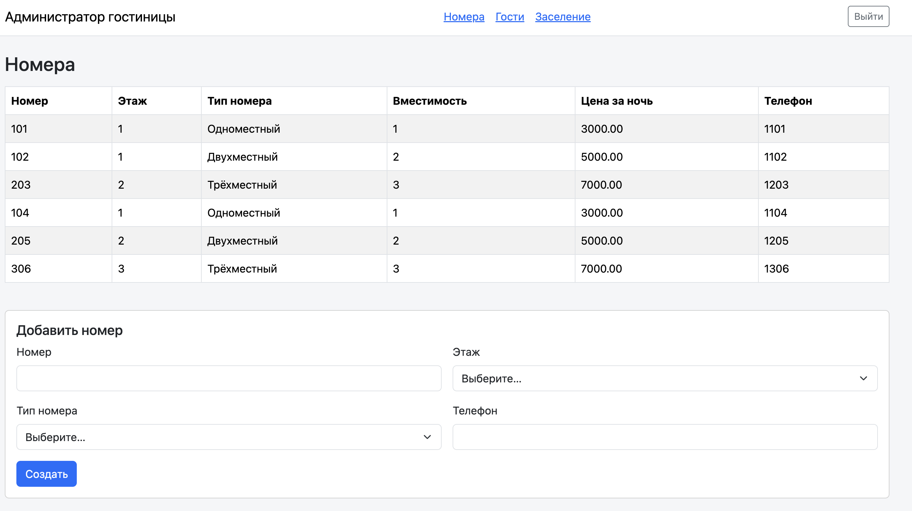
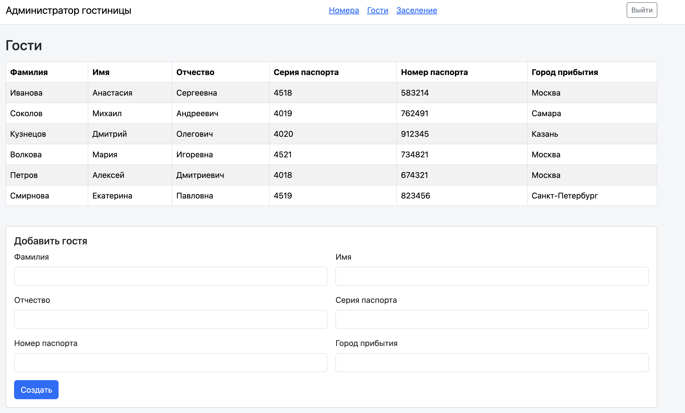
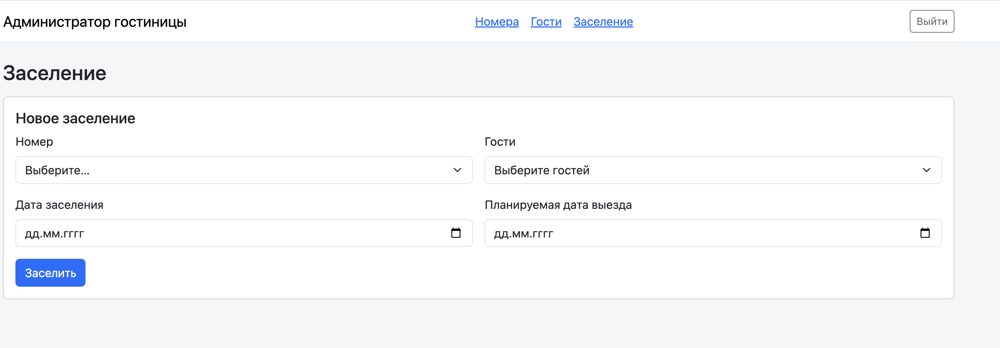
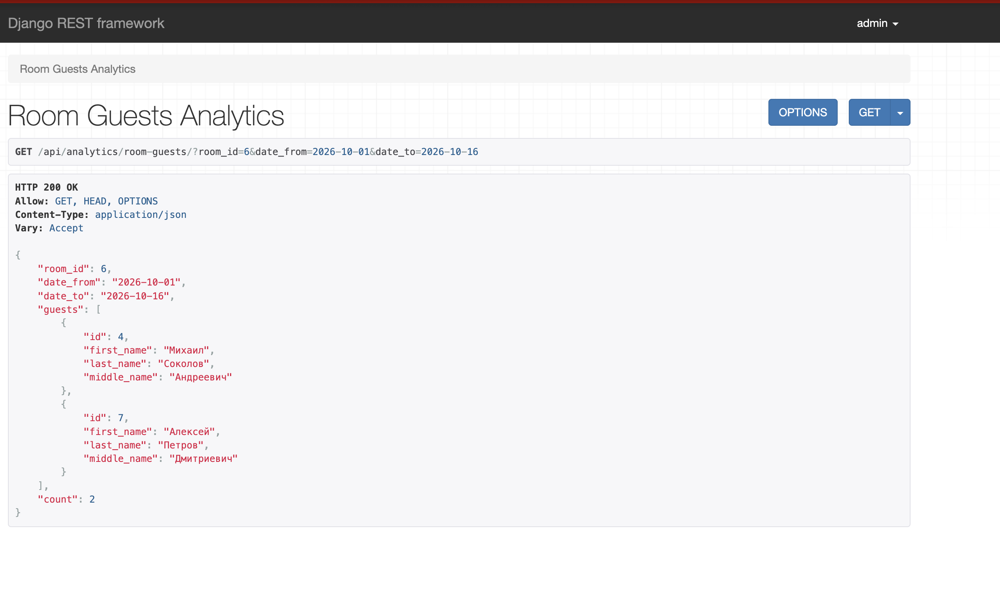
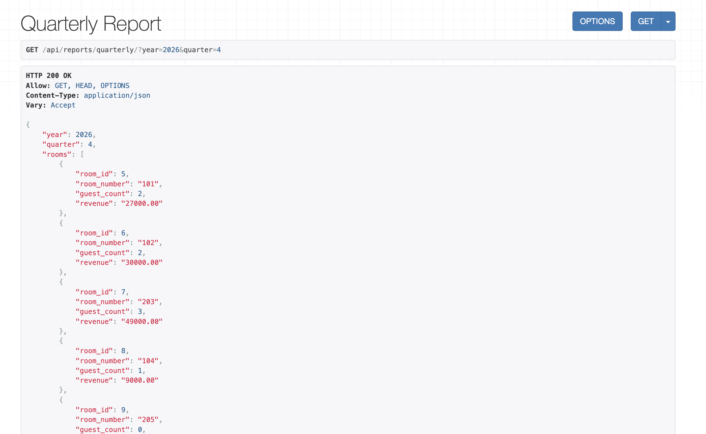

Лабораторная работа №3 «Администратор гостиницы»
1. Цель работы
Цель работы — разработать систему администрирования гостиницы с использованием Django, Django REST Framework и PostgreSQL. В ходе работы я создала базу данных, REST API и страницы для основных действий администратора.
2. Описание приложения
В приложении hotel_api я реализовала управление гостиничными номерами и регистрацию
постояльцев. Система позволяет заселять группы гостей, оформлять выселение, учитывать
сотрудников и составлять расписание уборки этажей. Для получения сводных данных
я добавила пять аналитических запросов и квартальный отчёт.
Для хранения данных использовала PostgreSQL. При заселении система проверяет вместимость номера, даты и пересечения с другими проживаниями. Тариф сохраняется в записи заселения, поэтому изменение цены типа номера не меняет стоимость прошлых проживаний. При выселении записывается фактическая дата выезда, а история сохраняется.
Для работы с гостиницей требуется активная учётная запись с правами сотрудника
(is_staff=True). В браузере используется сессия Django, а для запросов к API
также доступна авторизация по токену.
3. Модели базы данных
Я разделила данные приложения на восемь основных моделей:
RoomType— тип номера: название, вместимость и цена за ночь.Floor— этаж гостиницы с уникальным номером.Room— гостиничный номер, его этаж, тип и телефон.Guest— ФИО постояльца, паспортные данные и город прибытия.Accommodation— заселение в номер: дата заезда, плановая и фактическая даты выезда, сохранённый тариф.Stay— связь конкретного гостя с заселением.Employee— ФИО сотрудника, даты приёма и увольнения, необязательная связь с учётной записью.CleaningSchedule— назначение сотрудника на уборку этажа: день недели и период действия.
Каждый номер относится к одному этажу и одному типу. При этом у этажа и типа может
быть несколько номеров. Одно заселение относится к одному номеру, но может включать
нескольких гостей. Через Stay гость связан со своими заселениями, что позволяет
хранить историю повторных приездов.
Сотрудники и этажи связаны через CleaningSchedule: сотрудник может убирать несколько
этажей, а на одном этаже могут работать разные сотрудники. В расписании я храню
не только день недели, но и даты начала и окончания назначения.
4. Реализация REST API
REST API я реализовала с помощью Django REST Framework. Запросы к гостинице имеют
общий префикс /api/, данные передаются в формате JSON.
Адреса API ниже приведены как текстовые примеры HTTP-запросов. Они относятся
к запущенному Django-приложению. GitHub Pages публикует только отчёт MkDocs
и не обрабатывает запросы к /api/. Для переходов по отчёту используется
оглавление страницы.
Основную реализацию распределила по четырём файлам:
models.py— модели базы данных, связи и ограничения.serializers.py— проверка входных данных и преобразование данных для API.views.py— обработка запросов и формирование ответов.services.py— основная логика заселения, выселения, увольнения сотрудника и расчёта квартального отчёта.
Например, GET /api/rooms/ возвращает номера, а POST /api/rooms/ создаёт новый
номер. Запрос GET /api/guests/ возвращает список гостей, а POST /api/guests/
регистрирует гостя. Для сотрудников предусмотрены GET /api/employees/
и POST /api/employees/. Для отдельных номеров,
гостей и сотрудников доступны просмотр, изменение и удаление по ID с учётом
ограничений приложения.
Заселение выполняется запросом POST /api/check-in/. В нём передаются ID номера,
массив ID гостей и даты проживания. Список заселений можно получить через
GET /api/accommodations/, а выселение оформить через
POST /api/accommodations/<id>/check-out/, указав фактическую дату выезда.
Заселения и связи с гостями доступны для чтения; их создание выполняется через
операцию заселения.
Для просмотра расписания уборки используется GET /api/cleaning-schedules/,
для добавления назначения — POST /api/cleaning-schedules/, для просмотра
расписания сотрудника — GET /api/employees/<id>/schedule/. Увольнение оформляется
через POST /api/employees/<id>/dismiss/: система также завершает действующие
и отменяет будущие назначения на уборку.
Пример результата CRUD-запроса
Пример запроса списка номеров:
GET /api/rooms/
В ответе возвращается массив номеров с их ID, этажами, типами и телефонами.
5. Пользовательский интерфейс
Для повседневных действий я создала три страницы в общем оформлении с помощью Bootstrap. JavaScript загружает данные через REST API и отправляет формы без перезагрузки страницы. Результат операции или ошибка отображаются сообщением.
Номера
На странице / выводится таблица номеров с этажом, типом, вместимостью, ценой за ночь
и телефоном. Ниже расположена форма добавления номера. Этажи и типы загружаются
из API; перед созданием номера эти справочники должны быть заполнены.

Рисунок 1 — Страница гостиничных номеров.
Гости
На странице /guests/ я разместила список постояльцев и форму регистрации.
В форме указываются ФИО, серия и номер паспорта, а также город прибытия.
После сохранения список гостей обновляется.

Рисунок 2 — Страница постояльцев.
Заселение
На странице /check-in/ выбираются номер, гости, дата заезда и плановая дата выезда.
Для выбора нескольких гостей я добавила выпадающий список с чекбоксами и поиском
по ФИО. Выбор выполняется обычными кликами, а закрытое поле показывает количество
выбранных гостей. При отправке формы API получает массив их ID.
После успешного заселения форма очищается. Вместимость номера, корректность дат и занятость проверяются на сервере. Выселение, работа с сотрудниками, аналитика и квартальный отчёт реализованы через API.

Рисунок 3 — Форма заселения с выбором гостей.
6. Аналитические запросы
Я реализовала пять запросов для получения данных о гостях, номерах и уборке.
Все они выполняются методом GET и возвращают JSON.
| Запрос | Адрес API и параметры | Результат |
|---|---|---|
| Гости определённого номера за период | GET /api/analytics/room-guests/ — room_id, date_from, date_to |
Список уникальных гостей номера за период и их количество. |
| Количество гостей из города | GET /api/analytics/guests-by-city/ — city |
Количество зарегистрированных гостей из указанного города, включая гостей без заселений. |
| Сотрудник, назначенный на уборку этажа гостя | GET /api/analytics/guest-cleaner/ — guest_id, date |
Номер и этаж проживания гостя на выбранную дату, список назначенных уборщиков. |
| Свободные номера за период | GET /api/analytics/available-rooms/ — date_from, date_to |
Номера, свободные в течение всего указанного периода, и их количество. |
| Гости, проживавшие одновременно | GET /api/analytics/concurrent-guests/ — guest_id |
Гости, чьи проживания пересекались с проживаниями выбранного гостя в гостинице, включая другие номера. |
В расчётах используется фактическая дата выезда, а если она не указана — плановая. День выезда не входит в период проживания: в этот день номер можно использовать для нового заселения. Повторяющиеся гости в списках исключаются.
Например, запрос GET /api/analytics/available-rooms/?date_from=2026-11-01&date_to=2026-11-05
покажет номера, свободные на весь выбранный период.

Рисунок 4 — Пример результата аналитического API-запроса.
7. Квартальный отчёт
Для квартального отчёта я добавила запрос
GET /api/reports/quarterly/?year=2026&quarter=4. Год и квартал передаются
в параметрах, результат возвращается в формате JSON.
Отчёт содержит количество уникальных гостей по каждому номеру, рассчитанную стоимость проживания по номерам и общую сумму за квартал. Отдельно выводится количество номеров на каждом этаже, включая этажи без номеров.
Стоимость рассчитывается по сохранённому тарифу и количеству ночей, которые попали в выбранный квартал. Для группового заселения цена номера учитывается один раз, а не умножается на количество гостей. Если фактический выезд ещё не оформлен, используется плановая дата, поэтому сумма является расчётной стоимостью, а не учётом полученных платежей.

Рисунок 5 — Квартальный отчёт по гостинице.
8. Вывод
В ходе лабораторной работы я создала систему «Администратор гостиницы» на Django, Django REST Framework и PostgreSQL. Я научилась связывать модели и хранить историю заселений гостей и назначений сотрудников на уборку. Реализовала REST API с проверкой данных и отдельной логикой основных операций. Для работы с номерами, гостями и заселением создала страницы, которые обращаются к API. Также я закрепила работу с Django ORM при подготовке аналитических запросов и квартального отчёта.